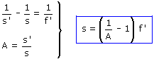

Para que pueda recogerse en película una imagen, esta tendrá que ser real e invertida y' = -34 mm Datos: f' = +50 mm | +22 mm, A = -34·10-3 m / 200 m = -17·10-5 Incógnitas: s', s Ecuaciones de la lente:  Sustituyendo cada distancia focal:
Observa que cuanto menor es la distancia focal (Mayor es la potencia del objetivo) menos hay que alejarse del edicicio para que salga entero en la foto |